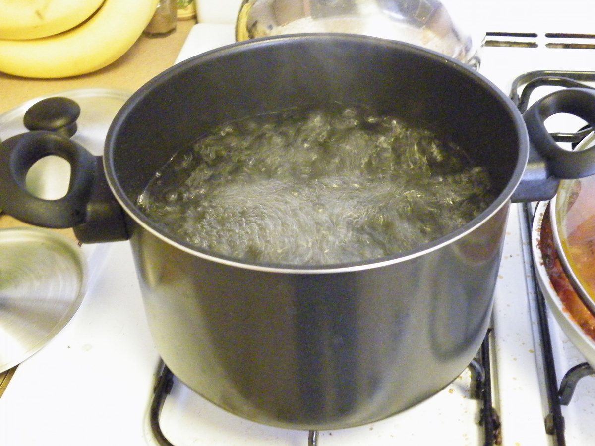

在停水、淹水、地震或戰亂中，找到水的下一步——把它變成能安全喝的水——往往才是真正的難關。人可以數週不進食，但缺乏乾淨飲水通常撐不過三天。這篇會帶你從「先濾掉雜質」到「殺死病菌」，把煮沸、漂白水、淨水錠與濾水器一次講清楚，並附上可直接照做的劑量對照表。

規劃前先知道目標。世界衛生組織（WHO）指出，在緊急狀況下維持基本生存與衛生，每人每天大約需要 7.5 至 15 公升的水；其中最低限度的飲用與料理用水，約為每人每天 3 公升。這也是你在〈居家儲備：水、糧、藥要存多少〉裡規劃儲水量的基準。
| 用途 | 每人每天建議量 | 備註 |
|---|---|---|
| 飲用 | 約 2 公升 | 高溫、勞動、生病、哺乳者需更多 |
| 料理 | 約 1 公升 | 可用免煮食物節省 |
| 個人衛生／盥洗 | 2–6 公升 | 缺水時以濕紙巾、乾洗手替代 |
| 合計（基本生存） | 約 3 公升起 | WHO 緊急標準總量約 7.5–15 公升 |
如果水很混濁、有泥沙或雜質，直接消毒的效果會大打折扣——懸浮微粒會包住病菌、擋住氯的作用。所以消毒前先做物理處理：
記住一個關鍵觀念：過濾讓水「變清」，但不等於「變安全」。多數簡易過濾無法可靠去除病毒，因此過濾之後，通常仍需再做一次消毒（煮沸或加氯）。
只要有火與鍋子，煮沸就是首選，能殺死細菌、病毒與寄生蟲，且不需任何化學藥劑。做法：把水加熱到持續翻滾的大滾（rolling boil）並維持 至少 1 分鐘；若你身處海拔約 2,000 公尺以上，因沸點較低，請延長到 3 分鐘。煮沸後蓋上蓋子自然冷卻，別開蓋久放以免再次污染。若覺得煮過的水味道平淡，可在兩個乾淨容器間來回倒幾次，讓空氣重新溶入即可改善口感。
沒有燃料時，家用漂白水是有效的替代方案。務必使用未添加香料、不含界面活性劑、主成分為次氯酸鈉、濃度約 5–6% 的一般漂白水。基本步驟：加入正確劑量 → 攪拌均勻 → 靜置至少 30 分鐘 → 聞聞看，應有淡淡的氯味；若完全沒有氯味，再加一次劑量、再等 15 分鐘。
| 水量 | 清澈的水 | 混濁／低溫的水 |
|---|---|---|
| 1 公升 | 2 滴 | 4 滴 |
| 4 公升 | 約 8 滴（≈0.5 毫升） | 約 16 滴（≈1 毫升） |
| 20 公升 | 約 2.5 毫升（約半茶匙） | 約 5 毫升（約 1 茶匙） |
| 作用時間 | 攪拌後靜置 30 分鐘以上，應可聞到淡淡氯味 | |
登山用品店可買到淨水錠（二氧化氯或含氯錠劑），體積小、適合放進緊急避難包，依包裝指示劑量與等待時間使用即可。攜帶型濾水器／濾水吸管（中空纖維、陶瓷濾芯）能濾除細菌與原蟲，但多數無法濾除病毒，因此在可能有病毒污染的情境（例如污水混入），仍建議過濾後再消毒。
| 方法 | 殺菌／病毒 | 需要什麼 | 優點 | 限制 |
|---|---|---|---|---|
| 煮沸 | 細菌✔ 病毒✔ 原蟲✔ | 火、燃料、鍋具 | 最可靠、免藥劑、無殘留 | 耗燃料、需等冷卻、無法除化學物 |
| 漂白水 | 細菌✔ 病毒✔ 原蟲部分 | 無味漂白水、滴管 | 省燃料、可大量處理 | 需精確劑量、有氯味、會失效 |
| 淨水錠 | 細菌✔ 病毒✔（依產品） | 市售錠劑 | 輕便、適合隨身 | 成本高、需等待、有味道 |
| 濾水器 | 細菌✔ 原蟲✔ 病毒✘（多數） | 濾水器／濾芯 | 立即可喝、口感好 | 多數不濾病毒、濾芯會堵 |
這是最容易被忽略、也最危險的一點：煮沸與加氯只能對付「生物性」污染（細菌、病毒、寄生蟲）。對於重金屬、農藥、工業化學物與放射性物質，這些方法完全無效——更糟的是，煮沸會因水分蒸發而「濃縮」這些有毒物質。若你身處工廠外洩、化學攻擊或核污染的情境（延伸閱讀：〈核／生／化威脅的基本防護觀念〉，即將推出），請改用：
先讓水變清（沉澱＋過濾），再讓水變安全（煮沸或加氯）。兩步驟缺一不可；而遇到化學或輻射污染時，這兩步都救不了你，只能換水源。
達到持續翻滾的大滾並維持至少 1 分鐘即可；海拔約 2,000 公尺以上延長到 3 分鐘。不需要滾很久，達到大滾的溫度才是重點。
可用「無味、5–6% 次氯酸鈉」的漂白水消毒：清水每公升 2 滴、混濁水每公升 4 滴，攪拌後靜置 30 分鐘，聞到淡淡氯味即可。含香料或添加物的漂白水不可用。
不一定。多數攜帶型濾水器無法濾除病毒。若水可能被污水或病原污染，過濾後仍建議煮沸或加氯再飲用。
單純泥沙混濁可先沉澱過濾再消毒；但若懷疑摻有化學物、油污、下水道污水或不明污染，不要冒險，改用瓶裝水或官方指定水源。
乾淨密封、避光陰涼下一般可放數天到約半年。開封或接觸空氣後盡快喝完，有疑慮就再煮沸一次。
※ 本文為一般防災與生存準備參考，整理自 WHO、台灣疾管署等公開衛教資訊，不能取代官方即時指示與專業醫療建議。緊急時請以政府公告與現場專業人員指揮為準；懷疑化學或輻射污染時，切勿自行處理飲用。